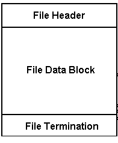
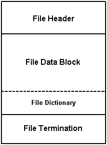

1. File Organization
.hsf files are organized into four main sections
as shown in figure 1:
-
File identification header - export is required
-
File data block
-
File termination trailer - export is required

Figure 1. HSF file organization
1.1 File Identification Header
An .hsf file must contain a file identification header at the
beginning of the file. The file header has two basic functions:
-
To allow for proper identification of .hsf files by human
or machine.
-
To identify which version of the HSF specification was used to encode
the file.
The header is a TKE_Comment opcode with specific contents; for example,
"HSF V5.01". The first 5 bytes are the constant "HSF V" which identify this
as an .hsf file. Note that these are in upper case. This constant
is followed by a version number consisting of:
1. one or more digits describing the major version
2. a decimal point
3. 2 digits describing the minor version
Readers can simply try to interpret the revision number as
a floating point value. Figure 2 gives an example of the TKE_Comment contents
for a file encoded with HSF specification version 5.01
| Byte |
0 |
1 |
2 |
3 |
4 |
5 |
6 |
7 |
8 |
| Character |
H |
S |
F |
(space) |
V |
5 |
. |
0 |
1 |
Figure 2. File header
The application generating an .hsf file must specify
the revision number that reflects the version of the HSF specification used
to encode the file. (If the HOOPS/Stream Toolkit is used to export the
file, the version information will automatically be exported.)
A reader application should not attempt to read a file with
a higher revision value than what it was designed for, since there is no completely
reliable way to do so.
Refer to the File Version
Information in the opcode definition documentation to determine what version
information should be exported.
Optionally, the TKE_File_Info
opcode may also be exported in
the File Identification Header section. This will help the reader applications
in knowing the flags used while generating the .hsf. HOOPS/Stream Toolkit
automatically exports this information.
1.2 File Data Block
Data in the file data block is delimited by operation codes
(opcodes) and argument data used by the opcodes (operands) as in Figure 3:
| <opcode> |
<operand> |
<opcode> |
<operand> |
<opcode> |
<operand> |
Figure 3. Opcode/operand pairs
All HSF opcode-operand pairs are in coded binary form. An application
reading an .hsf file must be able to recongnize and read through all
opcode-operand pairs, even if it is not interested in the particular data
for a subset of opcodes. If an opcode is unrecognized by a HSF reading
application, the rest of the file cannot be read.
1.3 Binary Data Format
The binary data is stored in little-endian format. On systems
with big-endian processors, such as Sun, and Hewlett Packard-based systems,
byte swapping must be performed before writing or reading the .hsf file.
Floating point numbers are stored as 4 bytes, using IEEE single-precision
format.
1.4 File Termination Trailer
An HSF file is terminated with a
TKE_Termination opcode which
indicates the end of the HSF data file. This termination opcode is required.
1.5 File Dictionary
TKE_Dictionary is an optional opcode that can be exported.
A .hsf file dictionary is a lookup table, providing the file offsets, bounding
information etc. to specified items and their variations. With this information
available, a reader application could randomly access .hsf file to implement
on-demand or view-dependent streaming.

Figure 4. HSF file organization with Dictionary
The dictionary must be written out just prior to the
TKE_Termination
opcode. Also, the last 4 bytes of the dictionary opcode should indicate the
file offset where the dictionary opcode begins. This is provided for the reader
application to be able to access the dictionary location and read it directly.
For a more detailed information on exact format of this opcode, please refer
to TKE_Dictionary Opcode. HOOPS/Stream
Toolkit exports the dictionary opcode if TK_Generate_Dictionary flag
is set.
2. Stream Compression
Individual opcodes may define their own methods for compressing
their data. However, HSF also supports general stream compression of
one or more objects. HSF uses the freeware zlib compression library,
available at http://www.gzip.org/zlib/
The zlib library provides for piecemeal compression and decompression
of the data. It also will indicate where it left off during decompression,
so that reading of uncompressed data can be resumed.
The TKE_Start_Compression opcode,
'Z', indicates that
data immediately following is zlib compressed. The last piece
of data within the compressed stream must be the
TKE_Stop_Compression opcode,
'z', and uncompressed data follows.
Logically, a stream of data like this (without compression):
ooooooooooZooooooooooooooooooooooooozoooooooooooo
might look something like this once compression is applied
to the appropriate section:
ooooooooooZxxxxxxoooooooooooo
where the 'xxxx' section indicates compressed data.
More specifically, let's say we have the following chunk of
data that we want to compress:
oooo
We would write the
TKE_Start_Compression opcode, 'Z', to the
file, and then pass 'ooooz' to zlib, where the 'z' denotes the
TKE_Stop_Compression
opcode. (This must be included at the end of the compressed stream that is
sent to zlib). If zlib returns 'xx' to represent the resulting compressed
data, then we would write the following to the file:
Zxx
3. Object Tagging
Some objects require the ability to re-accessed after they
are first encountered, such as reopening a segment to add more geometry, or
adding a level-of-detail representation of a previous shell. This is done
by tagging the object, which marks the object as 'interesting'.
After an object is written, a Tag opcode, 'q', is written to
the stream and the next sequential index (zero-based) should be associated
with the object by the HSF writing application. Any later objects than
need to refer to the object then use the index.
When a tag is read from the stream, an index (again zero-based)
should be assigned to the preceeding object by the HSF reading application,
and any later objects that are associated with that index can find the matching
item.
4. File Information Opcode
An .hsf file can optionally contain the
TKE_File_Info opcode,
which is meant to store information about how the file was written.
If the TK_Generate_Dictionary bit (0x400) is set in the contents of the
TKE_File_Info opcode , then the file must contain a
TKE_Dictionary opcode.